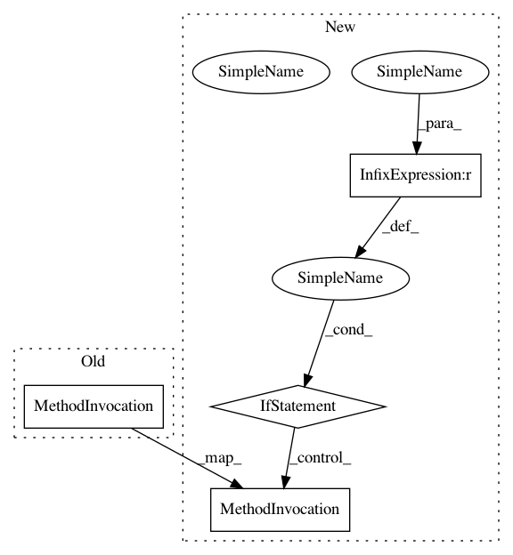

68794477b5148a6cac7fee94381638220db4d526,graphbrain/meaning/corefs_onto.py,,generate,#,36
Before Change
make_corefs(hg, edge, subs[best_pos])
count += 1
i += 1
bar.update(i)
return count
After Change
make_corefs(hg, edge, subs[best_pos])
count += 1
if i < edge_count:
i += 1
bar.update(i)
return count
In pattern: SUPERPATTERN
Frequency: 1
Non-data size: 4
Instances
Project Name: graphbrain/graphbrain
Commit Name: 68794477b5148a6cac7fee94381638220db4d526
Time: 2019-07-23
Author: telmo@telmomenezes.net
File Name: graphbrain/meaning/corefs_onto.py
Class Name:
Method Name: generate